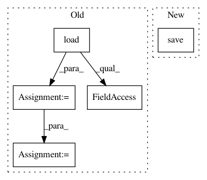

7dc35cbcb7d12dc1dc11688f22bb0ddda393847d,tests/test_track.py,,test_track_ensemble,#Any#Any#,112
Before Change
// Load atlas parcellation (and its wm-gm interface reduced version for
// seeding)
atlas_data = np.array(nib.load(labels_im_file).dataobj).astype("uint16")
atlas_data_wm_gm_int = np.asarray(nib.load(atlas_data_wm_gm_int).dataobj
).astype("uint16")
// Build mask vector from atlas for later roi filtering
parcels = []
i = 0
for roi_val in np.unique(atlas_data)[1:]:
parcels.append(atlas_data == roi_val)
i = i + 1
dwi_img = nib.load(dwi_file)
dwi_data = dwi_img.get_fdata()
model, _ = track.reconstruction(conn_model, gtab, dwi_data, wm_in_dwi)
After Change
temp_dir = tempfile.TemporaryDirectory()
recon_path = temp_dir.name + "/model_file.npy"
model, _ = track.reconstruction(conn_model, gtab, dwi_data, wm_in_dwi)
np.save(recon_path, model)
streamlines = track.track_ensemble(target_samples, atlas_data_wm_gm_int,
labels_im_file,
recon_path, sphere, directget, curv_thr_list, step_list,
In pattern: SUPERPATTERN
Frequency: 3
Non-data size: 5
Instances
Project Name: dPys/PyNets
Commit Name: 7dc35cbcb7d12dc1dc11688f22bb0ddda393847d
Time: 2020-08-12
Author: dpisner@utexas.edu
File Name: tests/test_track.py
Class Name:
Method Name: test_track_ensemble
Project Name: dPys/PyNets
Commit Name: 891e580bc8e66d0d81c2334c507cd1b10f93cbc2
Time: 2019-06-09
Author: dpisner@utexas.edu
File Name: pynets/registration/register.py
Class Name:
Method Name: direct_streamline_norm
Project Name: dPys/PyNets
Commit Name: 7dc35cbcb7d12dc1dc11688f22bb0ddda393847d
Time: 2020-08-12
Author: dpisner@utexas.edu
File Name: tests/test_track.py
Class Name:
Method Name: test_track_ensemble_particle